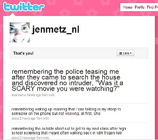
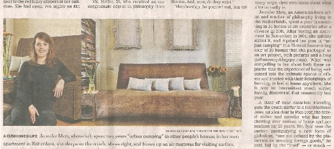

|  |  |  |  |  |
|
Writing Memoire on Twitter If you write One Memory at a Time perhaps a story emerges on its own?  Making a Lot of Space for Conversation One of the best experiences from urban camping through couch surfing was the chance to hear so many different stories about how the world works. I like to compare notes in terms of perspective, but I'm also just becoming addicted to the genre of conversational stories. Crafted stories through literature, movies, etc. have a beginning, middle and end. But conversational stories are interactive, organic and surprising. Crafted stories are designed to generate an effect on the reader (and I love them too) but conversational stories are candid interpretations, fragmented explanations, unique riddles, things you've never heard before. When people choose to be open, their stories are not formulaic. The stories are not craft. And I wish I could hear them all. Composite Housing In September 2007, House & Home writer for The New York Times, Penelope Green, contacted me through my blog. On the phone she told me she'd been reading my blog since July and wanted to write an article. The article, Surfing the Worldwide Couch, was published on 20 September 2007.  |